Spectrally Parameterized
Neural Inverse Reconstruction
Closed-form spectral forward models for coherent active sensing, validated on real 77 GHz FMCW radar.
Closed-form spectral forward models for coherent active sensing, validated on real 77 GHz FMCW radar.
We introduce Moray, a neural reconstruction framework for coherent inverse problems built on spectrally parameterized forward operators that bypass conventional time-domain synthesis and instead evaluate measurements directly through closed-form spectral kernels. This parameterization induces a substantially shorter and better-conditioned differentiable graph compared to time-domain approaches. We further introduce Phase-Coherent Manifold Parameterization, a scene representation that jointly learns scene reflectivity and a deformable surface manifold, allowing the reconstruction to adapt to geometric deviations from the assumed imaging plane. We instantiate these ideas for 77 GHz radar imaging using real measurements from a synthetic-aperture mmWave system. Across multiple challenging scenes, Moray consistently improves reconstruction fidelity, suppresses background artifacts, and degrades more gracefully under data limitations.
Many recent reconstruction methods formulate imaging as an analysis-by-synthesis problem: a neural scene representation is optimized so that measurements synthesized through a differentiable forward model match the observations. This paradigm has been extended to physical sensing modalities including transient imaging, ultrasound, RF propagation, and coherent acoustics. In these systems, optimization behavior depends not only on the neural representation itself, but also on how the physical forward operator is represented inside the differentiable pipeline — particularly in coherent sensing systems such as radar, sonar, and optical coherence tomography, where measurements retain carrier-phase information and the forward model operates on highly oscillatory complex-valued signals.
Most existing differentiable sensing pipelines synthesize a time-domain signal, sample it, and apply a spectral transform before evaluating the reconstruction loss. While physically faithful, this fixes a particular computational structure: gradients propagate through the entire synthesis pipeline regardless of whether all intermediate computations contribute useful information. At multi-GHz carrier frequencies, where scene information is concentrated in a small subset of spectral components, this leads to unstable optimization and characteristic artifacts. Moray instead parameterizes the forward model directly in the spectral domain: each measurement bin is evaluated in closed form through an analytically derived complex kernel, producing the same input-output mapping through a substantially shorter differentiable graph in which bins can be evaluated independently and supervision restricted to geometrically meaningful components.
We pair this with Phase-Coherent Manifold Parameterization, a scene representation that jointly learns reflectivity and a deformable surface manifold so the integration domain follows the object rather than a fixed imaging plane — eliminating wavelength-scale fringe artifacts that arise from depth mismatch at 77 GHz (λ ≈ 3.9 mm). Instantiated on real measurements from a synthetic-aperture mmWave radar, Moray consistently improves reconstruction fidelity, suppresses background artifacts, and degrades more gracefully under data limitations. More broadly, the results suggest that, in neural inverse problems, exposing the appropriate analytical structure of the sensing physics to the optimizer can be as important as the choice of neural representation itself.
From raw acquisition to reconstruction.
A single 77 GHz FMCW radar rasters across a scan plane, building up a synthetic aperture one chirp at a time. Every TX position contributes a full range spectrum of the scene.
The chirp's round-trip time-of-flight encodes scene geometry as a beat signal. The range information naturally gets encoded in spectral domain.
Rather than fixing a flat imaging plane, PCMP learns a deformable surface manifold jointly with the reflectivity. The imaging geometry follows the object surface, eliminating the carrier- wavelength fringe artifacts.
A compact INR represents the scene and is optimized against the measured spectra through the closed-form forward model. Per-bin supervision yields a well-conditioned optimization landscape and produces sharp, fringe-free reconstructions.
We compare against two recent neural radar reconstruction methods — DART and Radar Fields — on real measurements from our 77 GHz FMCW testbed. Both baselines inherit their forward models from time-domain photometric pipelines and re-render the full beat signal at every optimizer step.
The three objects probe different reconstruction challenges: the articulated metal handles of the pliers, the fine radial structure of the Siemens star and the dense raster of cylindrical holes in the grater. Across all three, Moray recovers sharper edges and cleaner reconstructions.
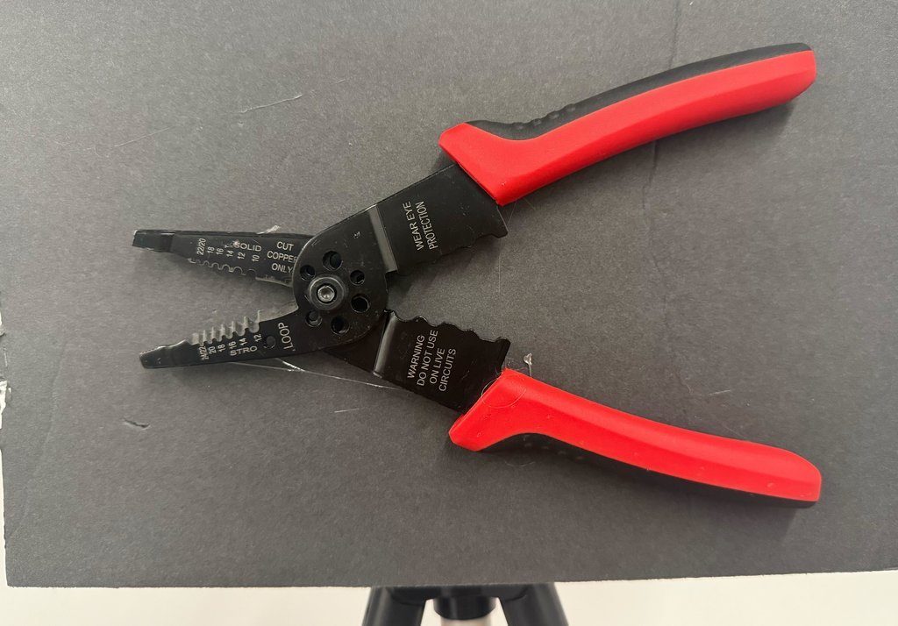
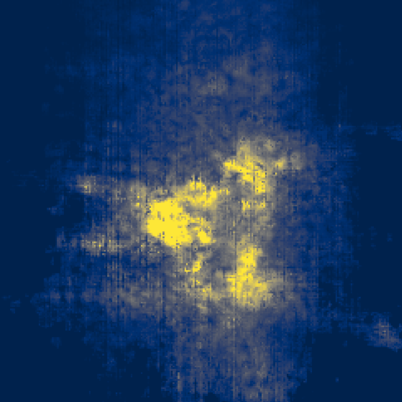
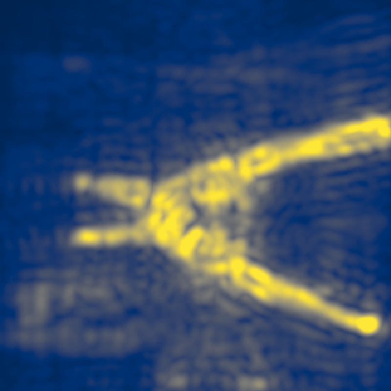
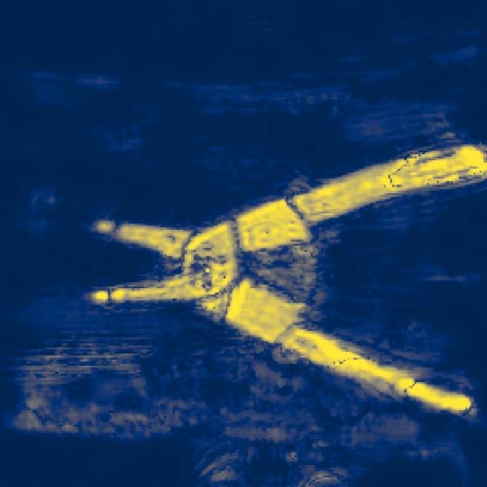
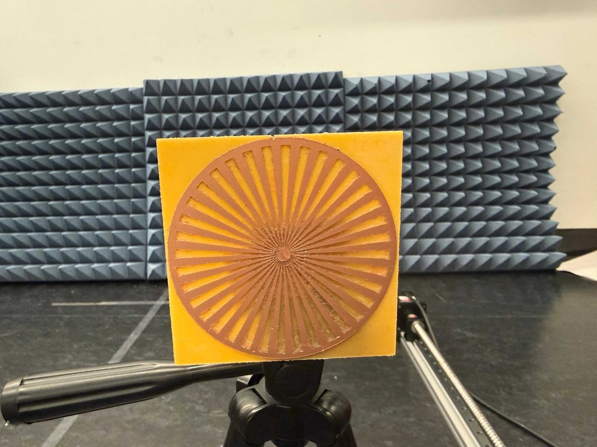
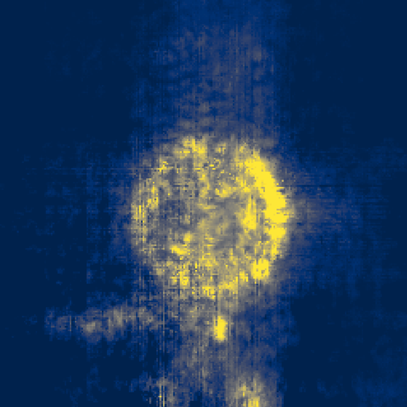
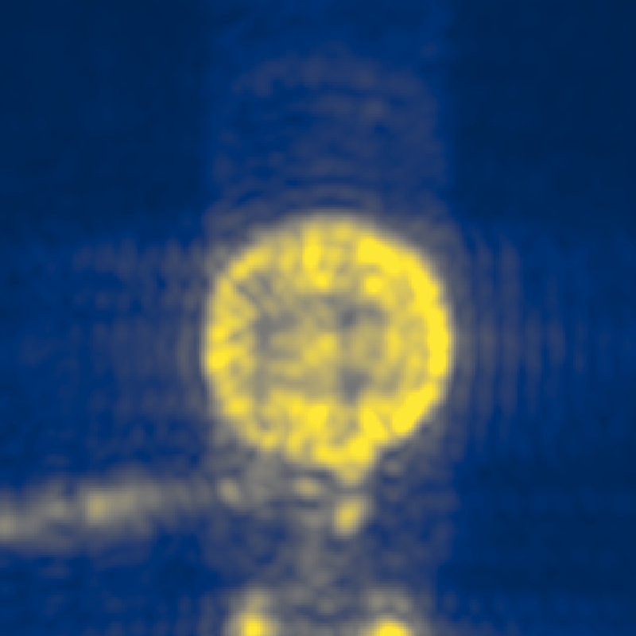
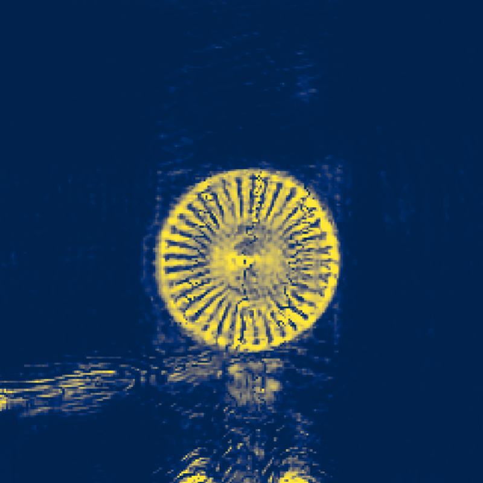
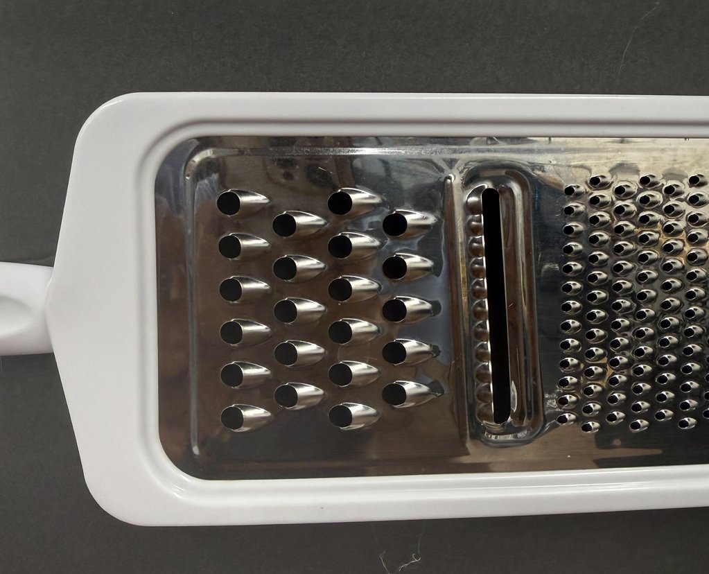
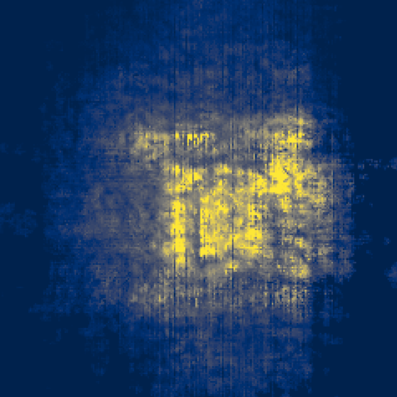
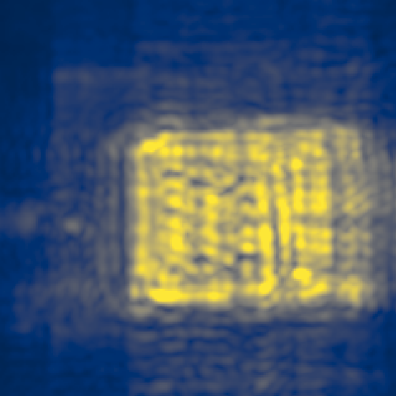
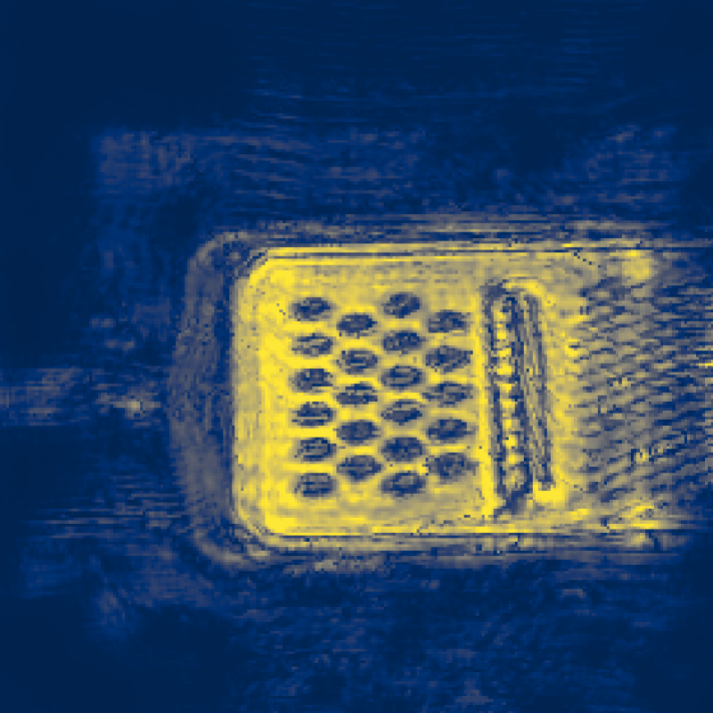
Under a coherent measurement, even sub-centimeter mismatch between the object surface and the assumed imaging plane wraps into a periodic phase pattern, which the optimizer faithfully reproduces as fringes set by the carrier wavelength (~3.9 mm at 77 GHz).
We resolve this with Phase-Coherent Manifold Parameterization: jointly learning the reflectivity and a deformable surface manifold so the reconstruction geometry adapts to where the scatterers actually live. Drag the handle to see the same scene reconstructed without PCMP and with PCMP.
Real synthetic-aperture systems rarely get the luxury of a fully sampled aperture: scanning is slow, hardware is expensive, and opportunistic measurements come with whatever transmit positions happen to be available.
We reduce the number of Tx in the aperture down to 50%, 25%, and 15% by random subsampling and reconstruct from the remaining positions. Backprojection creates ghost and aliasing artifacts. Moray degrades gracefully: edges stay sharp even under severe undersampling.